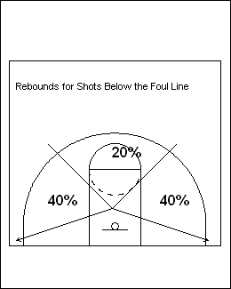
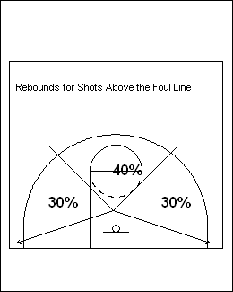

While not always glamorous, rebounding is truly one of the
most important foundations to basketball success.
Below, you’ll find our collection of basketball rebounding
drills to help your players become tougher and more active in
the paint, and help your team control the glass with superior skill.
Although height and jumping ability help, there is no substitute for
proper technique, grit and determination under the boards!
For starters, very few teams make 50% of their first shot attempts. If you were to actually study that, you will see that, at the very highest level (NBA) teams are in the 43% range. As you move down, through college and then to high school you will notice that the percentages go down to the mid 30's. Keep in mind that we are talking about 1st shots. Teams that consistently shoot near the 50% range are usually good in 2 areas, making lay-ups and getting offensive rebounds that turn into made lay-ups. Another thing to consider is that every rebound is a possession. If you get a defensive rebound, that gives you a possession and a chance to score on the other end. If you shoot, miss and get the offensive rebound, you have is an additional possession in which you have a chance to score. Most importantly, it is an additional possession that you have gained without the other team having a chance to score. Number of possessions is a very important reference point. The more possessions you have the less efficient you have to be on offense, the lower shooting percentage you have to have to attain the same number of points. It is more probable you will get 40 points by shooting 20 for 50 (40%) than the same number of points by shooting 20 for 40 (50%). If you shoot 20 for 60 (33%) you will still have 40 points. Shooting 20 for 30 (66%) still gives you 40 points but doesn't happen very often. Am I saying that it is better to shoot lower percentages? Certainly not. I am saying that it happens more often and it is more practical to practice and plan for missed shots because they usually happen more often than made shots. It is what happens to those missed shots that give you additional possessions, possessions that give you an opportunity to score while robbing your opponent of the same opportunity. That is what decides games.

Notice that nowhere in those 3 aspects is the size or strength. I am not saying that doesn't help but think about this, Paul Silas, at 6'6' didn't become one of the greatest offensive rebounders of all time because of his size. There were plenty of 6'6' players around but they could not do what Silas did. Bill Russell didn't become one of the greatest rebounders of all time because he was 6'9". There were plenty of bigger and stronger players around but they couldn't do what Russell could. Another, more current example would be Udonis Haslem of the Miami Heat. At 6'8", Haslem is drastically undersized to play power forward in the NBA. Yet, for the past 3 years he has been a leader in rebounds per minutes played.
Good rebounders understand the game and personnel. They study who shoots, when and from where. I know that that might be difficult when playing an opponent you have not seen before, but tendencies become apparent as the game unfolds. Be that as it may, there is no reason you can't study your own teammates. If you know Joey likes to shoot the ball from the right corner, instead of working on something that is going to be non-productive, get yourself in a position to rebound when Joey gets the ball in the right corner. That is preparation that will allow you to overcome most players you have to rebound against.
The next thing good rebounders understand is where the ball will go. Shots taken from the wing down to the baseline rebound back at the same angle or over at an opposite angle 80% of the time. Only 20% of shots rebound to the front of the rim.
Shots taken above the foul line extended to the top of the key rebound 60% to the sides and 40% to the front of the rim. Good rebounders are proactive. Study where the shots come from and react accordingly before the ball misses. You might miss a few but you will get a lot.
Good rebounders also understand that a long shot often produces a long rebound. Not always, but you have to play percentages. How long will the rebound be? Well that would be purely a guess. However, while we understand that being close to the rim is good for rebounding, you can be too close. Assume that EVERY shot will be a long rebound and position yourself as such. A good guide for position is the NBA charge/block arc in the lane. That is about the area you want to get to on a missed shot.
The skills of rebounding are simple: prepare your hands, block out, catch the ball. As simple as it sounds, these are skills that have to be practiced.
On the right side of the backboard, jump and dribble the ball off the backboard with your right hand. Time your jump so you dribble the ball while you are in the air. Pick a spot on the backboard to dribble at so you are not just batting the ball up. Do not bounce between dribbles, each jump is a dribble. With each dribble with your right hand, touch the rim with your left hand. If you can't get the rim, try to get the net. Switch sides and hands Work up to 50 taps or 2 minutes.
Start on the right side. Grab the ball with 2 hands, jump and bang the ball on the backboard, as hard as you can, 3 times. On the 4th jump, put the ball in the basket. If you can't get the backboard, use the wall.
Change sides. Work up to 20 bangs Keep the ball over your head. No rest or winding up between jumps.
While the shortest distance between 2 points might be a straight line, the same cannot be said of a rebound. While you can play the odds (see knowledge), trying to predict where a rebound will carom is like predicting how a football will roll after landing on its point. Balls hit hands, hits the rim multiple times, players are pushed out of position -- there are 2nd and 3rd chances when you did not think you had one chance. You have to condition yourself that you can get every rebound and go after it again and again until you grab it.
Technique will certainly help any rebounder, however rebounding is one area in basketball where you can excel with out technique. True greatness in rebounding, either as an individual or as a team lies in the emphasis and the value you place on it.
Jim Calhoun, the great coach at the University of Connecticut, says you should be able to walk into a practice and within 15 minutes you should be able to figure out what is important to the coach and the team. If you look at his teams, going all the way back to his days at Boston State and Northeastern, you will see that his teams are always one of the leaders in the nation in rebounding. Rebounding is a prominent feature in his offensive and defensive schemes. When you walk into his practice, it is evident immediately how important rebounding is to him and his team. In addition, one of the "Laws of Learning" is "primacy" (what is learned first is learned best). In Coach Calhoun's practices, the first drills they do every day are rebounding drills.Below i have listed some of my favourite rebounding drills check it out!